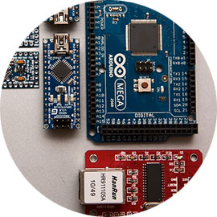

Roll up! Roll up! All aboard, for the magical maker bus ride. Next August, we're heading from the west coast to east coast, sharing the maker fun as we travel in our vintage Leyland bus.

Fly our JavaScript controlled quadcopters, filming the location from above as you soar with the birds. Or, if you prefer to stay on the ground, enter the maker jam.

The theme of this year's maker-jams is the future of travel. We'll be piling our bus high with arduinos, breadboards, controllers, diodes, engravers, files... Enter today.